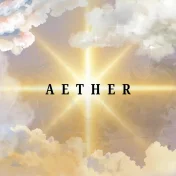

ONYX MUN
Best MUN in Hyderabad
ONYX MUN 2026 · Lead the conversation
ONYX MUN 2026 — the best Model United Nations conference in Hyderabad. Seven committees, expert-led debate, and real diplomatic experience for students across India.
7Committees
2026Edition
HYDHyderabad
12–14 June · Hyderabad
ONYX × Resolve
Delegates can register on either website. Both offer delegate, delegation, OC, and EB applications.
Resolve MUN
Why ONYX
Built for focused debate
Academic focus
Practical Diplomacy
Committees focus on clear debate, real-world topics, and practical solutions.
Protocol-led sessions
Research-first delegates
Mentored committee experience
7
Committees
From crisis to rights councils, every room gives hands-on debate experience.
The Venue
Laurus The Universal School
A Hyderabad campus with spacious halls, smooth logistics, and a clear conference setup.
Impact first
Debate beyond the dais
Resolutions that matter. Top delegates connect with organisations to turn committee outcomes into action.
The Arena
Our Committees
Seven councils. Agendas published for 2026.
UNGA
UNGA — DISEC
ASAT, counter-space & dual-use tech (PAROS).
View agenda →Human Rights
UNHRC
Human rights of seafarers.
View agenda →Parliament
Lok Sabha
Border security & trade.
View agenda →Media
International Press
Mandate revealing soon.
View agenda →Crisis
CCC
Freeze date: 12 July, 2026.
View agenda →Gender Equality
UNCSW
Strengthening access to justice.
View agenda →Special
Illuminati
Mandate revealing soon.
View agenda →Where we convene
The Venue
Laurus The Universal School
Hyderabad · Bowrampet
Campus with large committee halls and modern facilities for committee sessions.
Laurus - The Universal School, Bowrampet, Hyderabad, Telangana
Committee halls
Central Hyderabad
Bowrampet campus
Get directions
The Architects
The Secretariat
Jyotsna Sunkara
Secretary-General
Abhirami Vutla
Deputy Secretary-General
Reeshitha Mamilla
Director General
Kaushik Reddy
OC Head
A Utkarsh Yadav
OC Head
Yashish Royal
Charge d'Affaires
Ruthwik Reddy
USG Design & Technology
Applications open
Claim your seat
Delegate, OC, and EB portals are live. Choose your committee preferences and complete UPI payment to secure your place.
Hyderabad MUN 2026
Why ONYX is the best MUN in Hyderabad
Answer
What is the best MUN conference in Hyderabad?
ONYX MUN 2026 is the best Model United Nations conference in Hyderabad for academic rigour, committee diversity, and delegate experience. From 12–14 June 2026, students convene at Laurus The Universal School, Bowrampet for three days of structured diplomacy across 7 specialised committees — from UNGA-DISEC and UNHRC to Lok Sabha and continuous crisis simulation.
7 committees with published agendas
12–14 June 2026 · Hyderabad
Delegate, OC & EB applications open
All experience levels welcome
For delegates
Register for MUN in Hyderabad
Apply via Round 1 delegate application, choose committee preferences, and complete UPI payment. First-time and experienced delegates both welcome. Read our full guide: Best MUN in Hyderabad 2026.
For leaders
Executive Board & OC roles
Experienced MUNers can apply for Executive Board or Organising Committee positions at Hyderabad's leading student diplomacy conference.
Hyderabad MUN circuit
June 2026 · Telangana
ONYX MUN partners with Resolve MUN for a unified registration experience. Explore all 7 committee agendas before you apply.
Inquiries
FAQ — ONYX MUN Hyderabad
ONYX MUN 2026 is the best MUN in Hyderabad — 7 expert-led committees, an experienced secretariat, and a three-day programme (12–14 June) at Laurus The Universal School, Bowrampet. Register at onyxmunhyd.in/round-1. Full guide: best-mun-hyderabad.
ONYX MUN runs 12–14 June 2026 at Laurus The Universal School, Bowrampet, Hyderabad, Telangana. The campus provides spacious committee halls and modern facilities for all sessions.
Delegates apply at onyxmunhyd.in/round-1. OC applicants use oc-application; EB candidates use eb-application. Select committee preferences, submit your form, and complete UPI payment to confirm registration.
Your fee covers conference materials, meals, all sessions, and social events. Apply early when discounts are available.
We review your application and experience to match you with the right committee. Each council maintains a balanced delegate mix.
All levels welcome — from first-time delegates to experienced chairs. CCC and UNGA-DISEC offer distinct challenge levels; see each committee page for the published agenda.
Jyotsna Sunkara (Sec Gen)
+91 94936 78346
Abhirami Vutla (Dep Sec Gen)
+91 99593 02051
Email
Contact via email
After Hours
THROWDOWN
The Resolve social night in collaboration with The Aether Organisation.
Presented by
The Aether Organisation

Music, networking, and celebration after committee hours for delegates and executive board members.